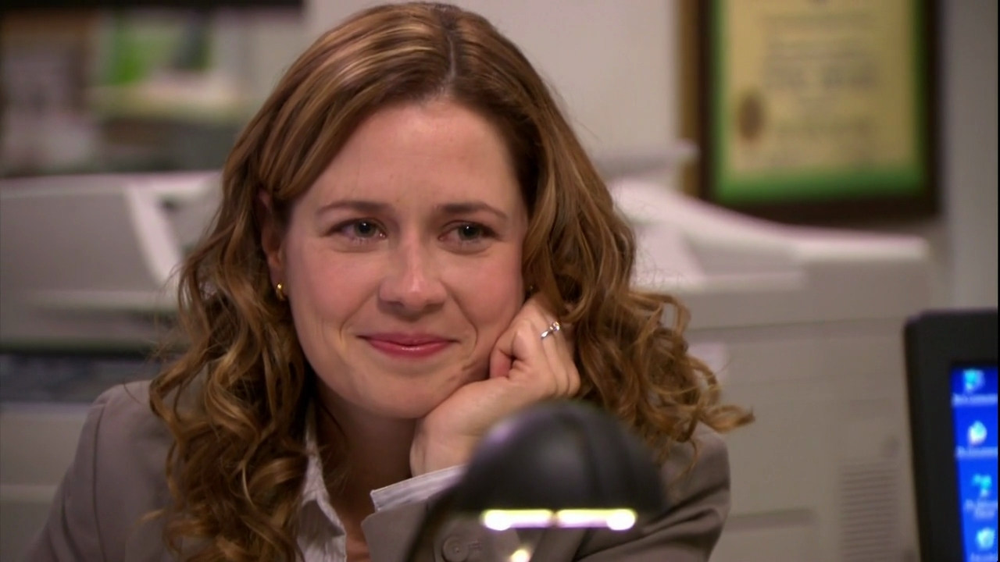

Pam Beesly
Receptionist/Saleswoman at the Scranton, Pa branch of paper company, Dunder Mifflin

Fictional Character, played by Jenna Fischer, on the award winning television series "the office". Pam is the receptionist at the Scranton, PA branch for the Dunder Mifflin Paper Company until season five, when she becomes the first saleswoman for the branch.
Pam is initially engaged to, warehouse worker, Roy, Until later seasons where she marrys long-time admirer, Jim Halpert. Pam's posses a kind-hearted and gentle personality that does later progress throughout the show when she adopts more assertiveness. As being a reciptionist was not her dream as a child, Pam exhibits a paticular interest in drawing. In season 4 she explores her artististic passions as she attends an art school in nyc. While, watching the comedy series the adaption of Pam's character is paticularly interesting.